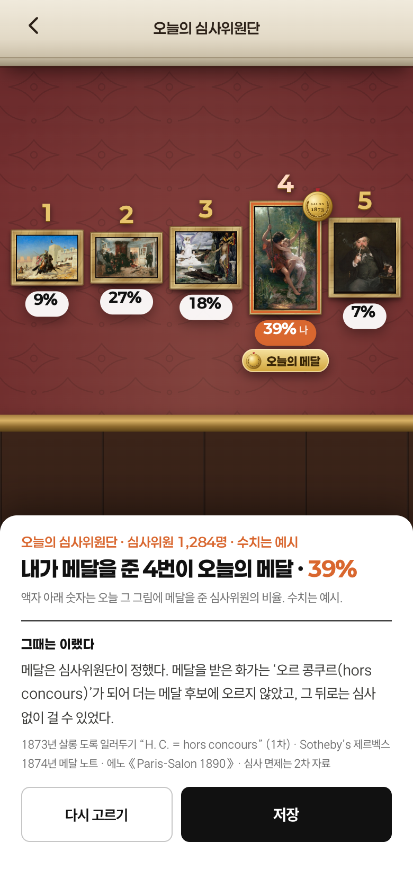
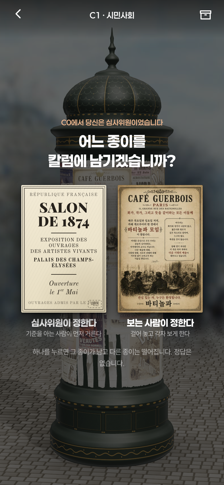
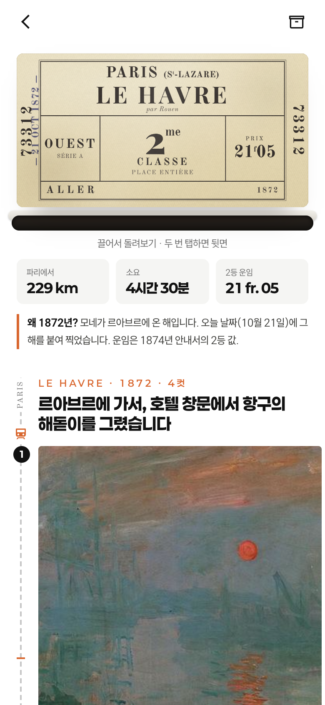
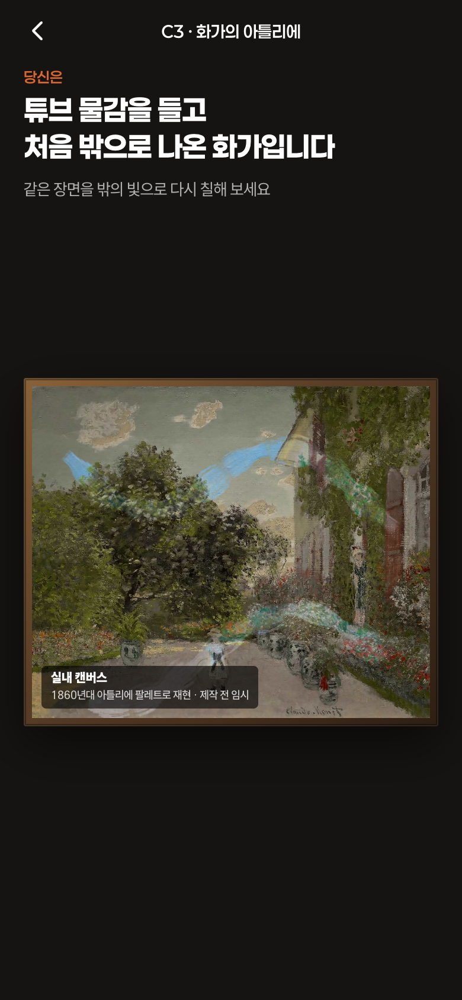
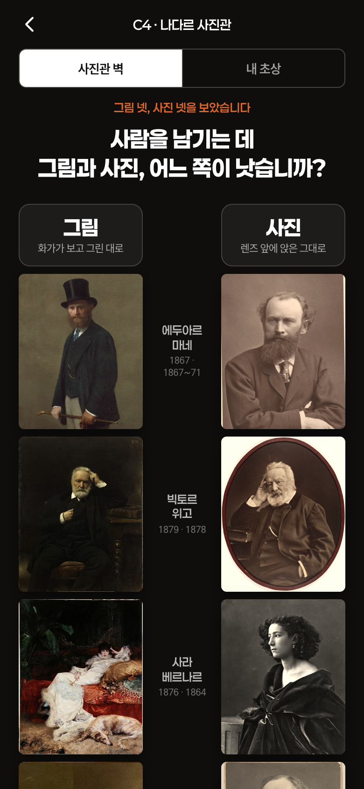
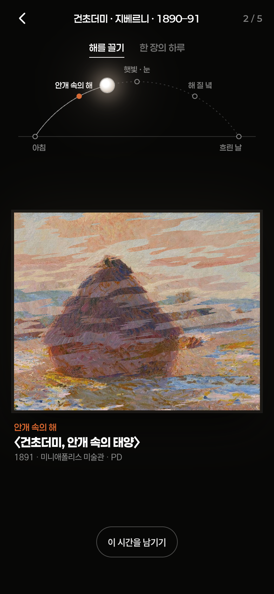
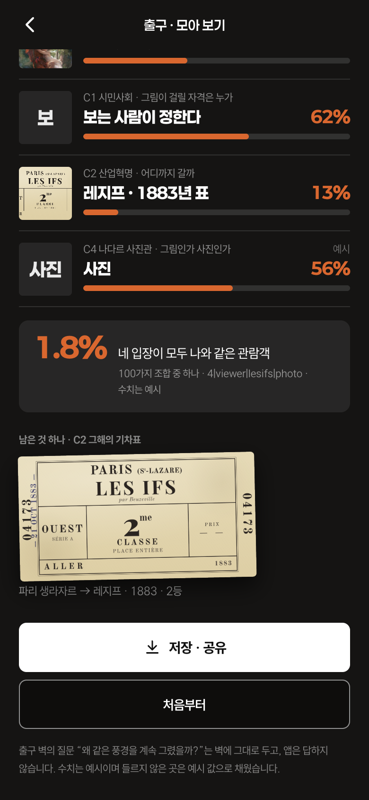

C0 아카데미 살롱 · 선택
심사하기 · 올해의 메달
당신은 오늘의 심사위원입니다.
벽에 한 줄로 걸린 후보작 5점 중 한 점에 올해의 메달을 준다. 벽은 바꾸지 않는다. 주고 나면 액자 아래에 오늘 심사위원들의 비율이 나타나고, 표가 가장 많은 그림에 오늘의 메달이 붙는다.
올해의 메달을 줄 한 점은?오늘의 심사위원단 · 4번 〈봄날〉 39% · 오늘의 메달 · 2번 27% · 3번 18% · 1번 9% · 5번 7%
MONET 100 · 신세계 더 헤리티지 4F · 2026.12.5 – 2027.2.28 · 문명탐험가 앱 · 제안 2026.10.22
같은 방을 지나도 입장은 갈린다. 그 갈림을 1874년과 오늘의 관람객 옆에 놓는다. 네 곳에서 한 번씩 입장을 묻고, 한 곳에서 만들고, 마지막에 모아 본다. 정답도 점수도 없다.
한 사람이 4층을 지나며 폰에서 보는 여섯 장면과 출구. 그림은 동작하는 프로토타입 화면(터치로 검수)이고, 수치는 모두 예시다.

당신은 오늘의 심사위원입니다.
벽에 한 줄로 걸린 후보작 5점 중 한 점에 올해의 메달을 준다. 벽은 바꾸지 않는다. 주고 나면 액자 아래에 오늘 심사위원들의 비율이 나타나고, 표가 가장 많은 그림에 오늘의 메달이 붙는다.

당신은 1874년 4월, 이 칼럼 앞을 지나는 파리 시민입니다.
3D 모리스 칼럼을 돌려 전단지 사이에서 살롱 밖 전시의 안내문을 찾아 펼친다. 그 옆에 살롱 1874 공고(재현)가 붙는다. 하나를 누르면 그 종이가 칼럼에 남고 다른 종이는 떨어진다. 그것이 답이다.

당신은 생라자르역 매표창 앞에 선 파리 시민입니다.
벽의 서부철도 노선도가 폰에 그대로 뜬다. 역 하나를 누르면 그해의 기차표가 창구에서 나오고, 모네가 거기 가서 한 일이 그의 그림 몇 컷으로 이어진다.

당신은 튜브 물감을 들고 처음 밖으로 나온 화가입니다.
어두운 실내 캔버스를 손가락으로 문지르면, 지나간 자리마다 밖에서 그린 밝은 캔버스가 붓자국처럼 칠해진다. 질문도 비율도 없다.
실내·야외 캔버스 2점은 새로 그린다. 프로토타입은 임시 이미지.

당신은 나다르 사진관의 손님입니다.
벽의 초상화 앞에서 셔터를 누르면 같은 사람을 나다르가 찍은 사진으로 현상된다. 마네·위고·베르나르·보들레르, 네 쌍을 다 본 뒤 두 줄(그림 | 사진)로 늘어놓고 한 줄을 고른다. 내 초상은 기념으로만.

당신은 연작 벽 앞에 선 관람객입니다.
벽에는 연작이 따로따로 걸려 있다. 앱에서 건초더미 · 루앙 대성당 한 줄을 누르면 같은 구도의 그림 5점이 하루에 따라 변하는 한 점이 된다. 호 위의 해를 끌면 때가 바뀌고(아침 · 안개 속의 해 · 정오 · 햇빛 · 저녁 · 해 질 녘 · 흐린 날 — 제목에 있는 말만), 그림 사이는 붓질로 번져 넘어간다(크로스페이드도 변형도 아닌 붓 마스크 디졸브). 손을 떼면 해가 저절로 느리게 가고, 그림을 누르면 멈춘다. 질문도 비율도 없다.
“이 시간을 남기기”는 지금 화면을 사진으로 기기에만 남기고 “당신이 멈춘 시간: 해 질 녘” 한 줄만. “한 장의 하루”는 같은 자리를 왼쪽 아침에서 오른쪽 끝까지 한 장으로 이어 붙인다. 벽으로 돌아오면 출구 벽의 문장 “왜 같은 풍경을 계속 그렸을까?”가 작게 한 번 떠오른다. 그림은 전부 퍼블릭 도메인(MFA · MIA · 바르베리니 · AIC · 오르세 · 푸시킨 · NGA, 정렬 방법과 출처는 상세 판).
네 질문 모두 그 방의 장치를 본 뒤에 묻고, 정답이 없고, 미술사 지식이 없어도 답할 수 있다. 1874년에 실제로 갈렸던 자리이고, 지금도 갈린다.
| 존 | 질문 | 1874년의 갈림 | 지금도 갈리는 이유 |
|---|---|---|---|
| C0 심사하기 | 올해의 메달을 줄 한 점은? | 메달은 심사위원단이 정했다. 메달을 받은 화가는 ‘오르 콩쿠르’가 되어 더는 메달 후보에 오르지 않았고, 그 뒤로는 심사 없이 걸 수 있었다. | 무엇이 좋은 그림인지는 지금도 사람마다 다르다. 오늘 심사위원들의 표가 오늘의 메달이 된다. |
| C1 자격을 묻기 | 그림이 걸릴 자격은 누가 정해야 합니까? | 1874년 4월, 화가들이 살롱 심사를 거치지 않고 나다르의 옛 사진관에서 스스로 전시를 열었다. 한 달 약 3,500명. | 전문가의 선별과 보는 사람의 선택은 지금도 맞선다. C0에서 심사위원이었던 사람에게 묻는다. |
| C2 어디까지 | 어디까지 갈까? | 철도가 파리 시민에게 하루 만에 닿는 바다를 주었다. 모네의 1870~90년대는 그 선택의 기록이다. | 가까운 들판에서 멈출지 바다까지 갈지는 성향의 문제다. 오늘 바다까지 간 사람 몇 %. |
| C4 그림인가 사진인가 | 사람을 남기는 데 그림과 사진, 어느 쪽이 낫습니까? | 사진이 닮음을 가져가던 때. 보들레르는 1859년 사진 산업을 예술의 적이라 썼고, 그의 얼굴을 남긴 것은 나다르의 사진이다. | 그린 초상과 찍은 사진, 보정과 생성까지. 어느 쪽이 그 사람인지는 지금도 갈린다. |
C5의 “출구에서 오늘의 관람객 보기”로 들어온다. 당신은 모네의 방을 한 바퀴 돈 관람객이다.

AI, 업로드, 대용량 내려받기 없음. 그림 인식 파일 10.3MB와 영상을 뺀다.
입장별 카운터만 센다. 1인 보내기 약 1KB, 받기 약 3KB. 사람별 기록 없음.
각자 자기 폰으로 동시에. 한 대의 기기를 기다리는 구조가 없다.
MONET 100 · 4F 체험 재기획 · 제안 · 수치는 예시 · 원고는 큐레이터 검수 전